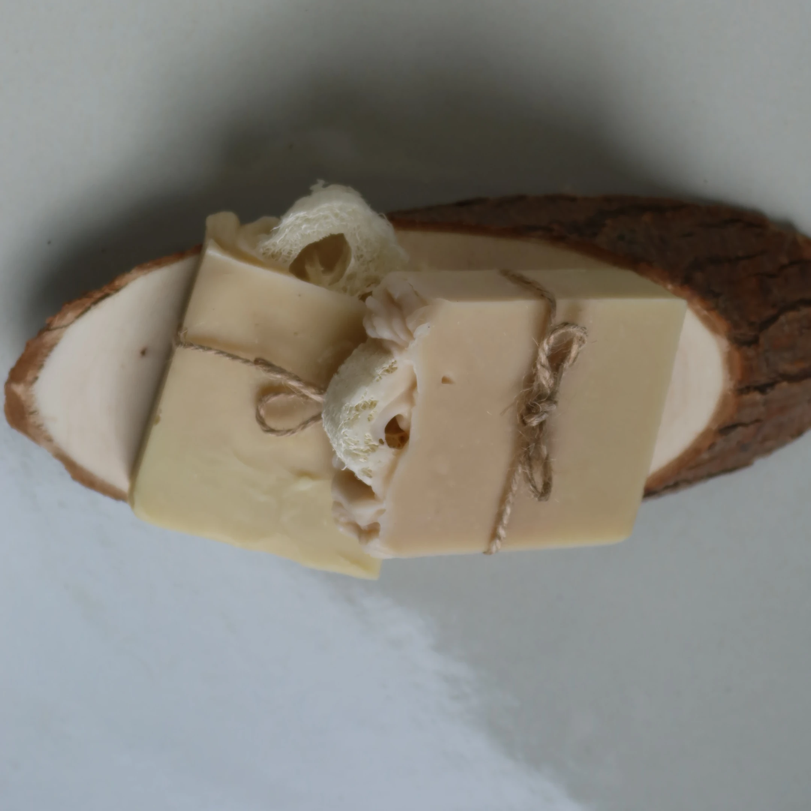

Handcrafted in Gatineau, Québec
Cedarwood & Eucalyptus Loofah

A refreshing exfoliating bar with natural loofah for a satisfying scrub.
Ingredients
Saponified Oils ( Organic Olive Oil, Organic Coconut Oil, Raw Mango Butter, Unrefined Shea Butter), Natural Loofah, Steam-Distilled Essential Oils (Cedarwood, Eucalyptus, Peppermint).
Browse all products